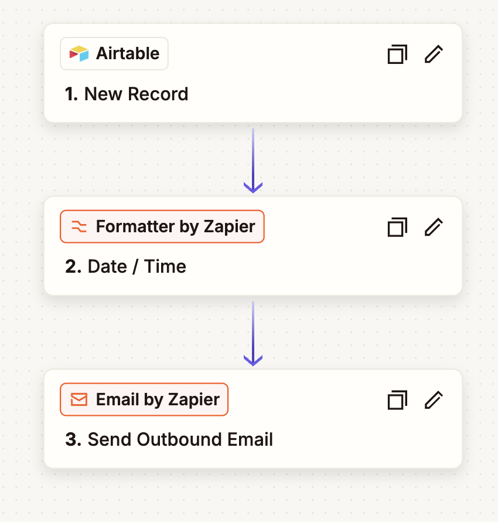

About Me
I’m an **AI automation and SaaS workflow specialist** with a customer-first mindset. I focus on turning manual, repetitive processes into scalable, AI-driven automation.
Currently working at a fast-paced SaaS startup, I sit at the intersection of operations, customer experience, and AI engineering. My day-to-day includes:
- Designing intelligent agent workflows using Skyvern and Zapier.
- Troubleshooting complex platform bugs and managing manual QA testing.
- Collaborating with product and GTM teams to optimize core business processes.
As a graduate of Lighthouse Labs’ Full-Stack Web Development Bootcamp, I bridge the gap between deep technical code and fast-moving business operational needs.
💻 Tech Stack: JavaScript, React, Node.js, Express.js, PostgreSQL, REST APIs & Webhooks
Experience
Tablz.com: SaaS Operations & AI Workflow Specialist
2023 — Present- Built AI-driven workflows using ChatGPT, Gemini, Zapier
- Integrated SaaS APIs and webhooks for automation
- Created SOPs for internal automation systems
- Executed QA testing with Cypress & Playwright
House of Funk Roasting Co: Co-Founder and Director of Coffee
2019 — 2023- Built operational workflows for inventory
- Implemented digital systems for business efficiency
Projects
AI SaaS Workflow System
Automated SaaS operations using AI + API workflows.
Automations & Systems Engineering
Architected and deployed 30+ custom, multi-tenant integration pipelines linking core company relational databases to internal tooling and client communication channels.
01 / Multi-Tenant Reservation Dispatch System
Engineered a scalable ingestion pipeline that live-syncs core production reservation data into customized, filtered Airtable relational matrices.
- Scale: Built and maintained 14 distinct live client workflows.
- Mechanism: Monitored real-time database views filtering for active, future-dated reservations, triggering localized Zapier webhooks.
- Impact: Instantly dispatches beautifully formatted confirmation emails to customers with zero manual overhead.

02 / Real-Time Cancellation Detection & Recovery Pipelines
Designed an automated alert system to handle reservation volatility and immediately update customer-facing touchpoints upon event cancellation.
- Scale: Deployed 14 specialized pipelines tailored to specific client rules.
- Mechanism: Utilized conditional logic structures inside Airtable to catch state changes and execute instant database-to-email workflows.
- Impact: Cut notification latency from hours to seconds, enabling near-instant communication and freeing up inventory immediately.
03 / Scheduled Cron-Style Daily Manifest Reports
Created a daily digest reporting system for high-volume stakeholders requiring immediate, "day-of" operational visibility.
- Scale: Curated high-impact morning digests for 3 primary enterprise clients.
- Mechanism: Programmed a time-based cron trigger inside Zapier to query time-sensitive, filtered daily manifest tables every morning.
- Impact: Replaced manual daily reporting with an elegant, automated morning summary delivered straight to client inboxes before shift starts.
Contact
Email: a.m.hnatyshyn@gmail.com
LinkedIn: linkedin.com/in/ann-hnatyshyn